Статистика обращений к greenbro.net
Статистика обращений к greenbro.net
Программа стартовала в пт. 31 мая 2019 16:45.
Анализ обращений к серверу с пн. 3 дек 2018 22:13 по пт. 31 мая 2019 15:02 (178,70 дней).
Статистика обращений к greenbro.netПрограмма стартовала в пт. 31 мая 2019 16:45.
Анализ обращений к серверу с пн. 3 дек 2018 22:13 по пт. 31 мая 2019 15:02 (178,70 дней).
(Переход: Вверх | Основная Информация | Статистика по месяцам | Статистика по дням недели | Статистика по времени суток | Статистика по доменам | Статистика по организациям | Статистика по перенаправляющим ссылкам | Статистика отказов по ссылкам | Статистика по ссылающимся сайтам | Статистика по браузерам (подробная) | Статистика по браузерам (суммарная) | Статистика по операционным системам | Статистика по коду возврата | Статистика по размерам файлов | Статистика по типам файлов | Статистика по директориям | Статистика по запросам)
Запись в круглых скобках - данные за 7 дней до 31 мая 2019 16:45.
Успешных обращений: 8 386 (286)
Среднее кол. успешных обращений в день: 46 (40)
Успешных обращений к страницам: 2 617 (93)
Среднее кол. успешных обращений к страницам в день: 14 (13)
Неуспешных запросов: 8 827 (75)
Перенаправленных запросов: 290 (0)
Количество запрошенных файлов: 130 (982)
Количество обслуженных хостов: 1 392 (2 185)
Данных передано: 97,73 мегабайт (2,95 мегабайт)
Среднее кол. переданных данных в день: 560,03 килобайт (431,55 килобайт)
(Переход: Вверх | Основная Информация | Статистика по месяцам | Статистика по дням недели | Статистика по времени суток | Статистика по доменам | Статистика по организациям | Статистика по перенаправляющим ссылкам | Статистика отказов по ссылкам | Статистика по ссылающимся сайтам | Статистика по браузерам (подробная) | Статистика по браузерам (суммарная) | Статистика по операционным системам | Статистика по коду возврата | Статистика по размерам файлов | Статистика по типам файлов | Статистика по директориям | Статистика по запросам)
Каждый символ ( ) отображает 15 обращений к страницам или около этого.
) отображает 15 обращений к страницам или около этого.
| месяц | запросы | страниц | |
|---|---|---|---|
| дек 2018 | 584 | 372 |   |
| янв 2019 | 488 | 376 |  |
| фев 2019 | 566 | 543 |   |
| мар 2019 | 840 | 456 | |
| апр 2019 | 3490 | 445 | |
| мая 2019 | 2418 | 425 | |
Наибольшее количество обращений в фев 2019 (543 обращений к страницам).
(Переход: Вверх | Основная Информация | Статистика по месяцам | Статистика по дням недели | Статистика по времени суток | Статистика по доменам | Статистика по организациям | Статистика по перенаправляющим ссылкам | Статистика отказов по ссылкам | Статистика по ссылающимся сайтам | Статистика по браузерам (подробная) | Статистика по браузерам (суммарная) | Статистика по операционным системам | Статистика по коду возврата | Статистика по размерам файлов | Статистика по типам файлов | Статистика по директориям | Статистика по запросам)
Каждый символ () отображает 15 обращений к страницам или около этого.
| день | запросы | страниц | |
|---|---|---|---|
| вс. | 937 | 352 | |
| пн. | 1322 | 558 | |
| вт. | 1328 | 357 | |
| ср. | 1134 | 368 | |
| чт. | 2258 | 339 | |
| пт. | 761 | 306 | |
| сб. | 646 | 337 | |
(Переход: Вверх | Основная Информация | Статистика по месяцам | Статистика по дням недели | Статистика по времени суток | Статистика по доменам | Статистика по организациям | Статистика по перенаправляющим ссылкам | Статистика отказов по ссылкам | Статистика по ссылающимся сайтам | Статистика по браузерам (подробная) | Статистика по браузерам (суммарная) | Статистика по операционным системам | Статистика по коду возврата | Статистика по размерам файлов | Статистика по типам файлов | Статистика по директориям | Статистика по запросам)
Каждый символ () отображает 6 обращений к страницам или около этого.
| час | запросы | страниц | |
|---|---|---|---|
| 0 | 185 | 73 | |
| 1 | 118 | 91 | |
| 2 | 163 | 105 | |
| 3 | 123 | 101 | |
| 4 | 123 | 95 | |
| 5 | 123 | 104 | |
| 6 | 108 | 84 | |
| 7 | 114 | 80 | |
| 8 | 136 | 82 | |
| 9 | 429 | 102 | |
| 10 | 360 | 96 | |
| 11 | 354 | 73 | |
| 12 | 213 | 101 | |
| 13 | 301 | 59 | |
| 14 | 237 | 132 | |
| 15 | 915 | 207 | |
| 16 | 648 | 70 | |
| 17 | 434 | 91 | |
| 18 | 735 | 108 | |
| 19 | 418 | 108 | |
| 20 | 452 | 66 | |
| 21 | 494 | 227 | |
| 22 | 786 | 232 | |
| 23 | 417 | 130 | |
(Переход: Вверх | Основная Информация | Статистика по месяцам | Статистика по дням недели | Статистика по времени суток | Статистика по доменам | Статистика по организациям | Статистика по перенаправляющим ссылкам | Статистика отказов по ссылкам | Статистика по ссылающимся сайтам | Статистика по браузерам (подробная) | Статистика по браузерам (суммарная) | Статистика по операционным системам | Статистика по коду возврата | Статистика по размерам файлов | Статистика по типам файлов | Статистика по директориям | Статистика по запросам)

Поделено на сектора по суммарному трафику.
 [нераспознанный IP-адрес]
[нераспознанный IP-адрес]
Список доменов, отсортировано по суммарному трафику.
| запросы | %байт | домен |
|---|---|---|
| 8384 | 100% | [нераспознанный IP-адрес] |
| 2 | .com (Комерческий домен) |
(Переход: Вверх | Основная Информация | Статистика по месяцам | Статистика по дням недели | Статистика по времени суток | Статистика по доменам | Статистика по организациям | Статистика по перенаправляющим ссылкам | Статистика отказов по ссылкам | Статистика по ссылающимся сайтам | Статистика по браузерам (подробная) | Статистика по браузерам (суммарная) | Статистика по операционным системам | Статистика по коду возврата | Статистика по размерам файлов | Статистика по типам файлов | Статистика по директориям | Статистика по запросам)
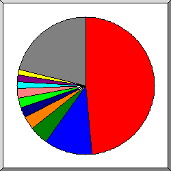
Поделено на сектора по количеству обращений.
95
 193.106
193.106
 106
106
 46
46
 5
5
 37
37
 40
40
 123
123
 66.249
66.249
 180.76
180.76
 другое
другое
Показано первые 20 организаций - по количеству обращений, отсортировано по количеству обращений.
| запросы | %байт | организация |
|---|---|---|
| 2405 | 16,81% | 95 |
| 1453 | 39,87% | 193.106 |
| 496 | 3,79% | 106 |
| 396 | 6,53% | 46 |
| 266 | 1,32% | 5 |
| 262 | 0,53% | 37 |
| 221 | 6,23% | 40 |
| 193 | 2,66% | 123 |
| 168 | 1,07% | 66.249 |
| 148 | 0,48% | 180.76 |
| 143 | 1,74% | 66.102 |
| 141 | 0,47% | 42 |
| 140 | 0,42% | 141.8 |
| 120 | 0,36% | 54 |
| 100 | 1,23% | 193.105 |
| 89 | 0,39% | 109 |
| 81 | 0,91% | 111 |
| 78 | 0,34% | 52 |
| 64 | 0,33% | 218.30 |
| 60 | 0,82% | 167.114 |
| 1362 | 13,70% | [не распознано: 184 организаций] |
(Переход: Вверх | Основная Информация | Статистика по месяцам | Статистика по дням недели | Статистика по времени суток | Статистика по доменам | Статистика по организациям | Статистика по перенаправляющим ссылкам | Статистика отказов по ссылкам | Статистика по ссылающимся сайтам | Статистика по браузерам (подробная) | Статистика по браузерам (суммарная) | Статистика по операционным системам | Статистика по коду возврата | Статистика по размерам файлов | Статистика по типам файлов | Статистика по директориям | Статистика по запросам)
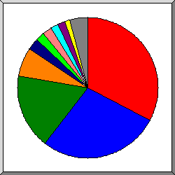
Поделено на сектора количество перенаправленных запросов.
http://greenbro.net/registration/registration.php
http://www.greenbro.net/
Список ссылающихся URLей, отсортировано количество перенаправленных запросов.
| запросы | URL |
|---|---|
| 18 | http://greenbro.net/registration/registration.php |
| 1 | http://www.greenbro.net/ |
(Переход: Вверх | Основная Информация | Статистика по месяцам | Статистика по дням недели | Статистика по времени суток | Статистика по доменам | Статистика по организациям | Статистика по перенаправляющим ссылкам | Статистика отказов по ссылкам | Статистика по ссылающимся сайтам | Статистика по браузерам (подробная) | Статистика по браузерам (суммарная) | Статистика по операционным системам | Статистика по коду возврата | Статистика по размерам файлов | Статистика по типам файлов | Статистика по директориям | Статистика по запросам)
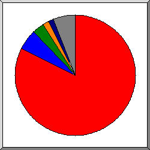
Поделено на сектора по количеству отказов.
http://greenbro.net/scripts/goods.php
http://greenbro.net/
http://greenbro.net/wp-login.php
http://greenbro.net/index.php
http://greenbro.net/phpmyadmin/index.php
другое
Список ссылающихся URLs, отсортировано по количеству отказов.
(Переход: Вверх | Основная Информация | Статистика по месяцам | Статистика по дням недели | Статистика по времени суток | Статистика по доменам | Статистика по организациям | Статистика по перенаправляющим ссылкам | Статистика отказов по ссылкам | Статистика по ссылающимся сайтам | Статистика по браузерам (подробная) | Статистика по браузерам (суммарная) | Статистика по операционным системам | Статистика по коду возврата | Статистика по размерам файлов | Статистика по типам файлов | Статистика по директориям | Статистика по запросам)
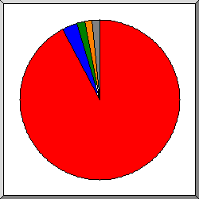
Поделено на сектора по количеству обращений.
http://greenbro.net/
http://www.greenbro.net/
http://www.sogou.com/
https://uptime.com/
другое
Список ссылающихся сайтов, отсортировано по количеству обращений.
| запросы | сайт |
|---|---|
| 4919 | http://greenbro.net/ |
| 221 | http://www.greenbro.net/ |
| 140 | http://www.sogou.com/ |
| 115 | https://uptime.com/ |
| 20 | http://burger-imperia.com/ |
| 15 | http://pizza-imperia.com/ |
| 8 | http://hundejo.com/ |
| 8 | http://mail.greenbro.net/ |
| 7 | android-app://org.telegram.messenger/ |
| 5 | https://www.facebook.com/ |
| 3 | https://www.google.com/ |
| 3 | http://pizza-tycoon.com/ |
| 2 | https://yandex.ru/ |
| 2 | http://www.marinetraffic.com/ |
| 1 | http://search.aol.com/ |
| 1 | android-app://com.google.android.googlequicksearchbox/ |
| 1 | http://www.google.com.hk/ |
| 1 | https://wap.sogou.com/ |
(Переход: Вверх | Основная Информация | Статистика по месяцам | Статистика по дням недели | Статистика по времени суток | Статистика по доменам | Статистика по организациям | Статистика по перенаправляющим ссылкам | Статистика отказов по ссылкам | Статистика по ссылающимся сайтам | Статистика по браузерам (подробная) | Статистика по браузерам (суммарная) | Статистика по операционным системам | Статистика по коду возврата | Статистика по размерам файлов | Статистика по типам файлов | Статистика по директориям | Статистика по запросам)
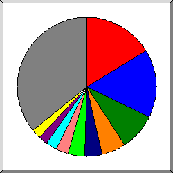
Поделено на сектора по количеству обращений к странице.
Sogou web spider/4.0(+http://www.sogou.com/docs/help/webmasters.htm#07)
Mozilla/5.0 (compatible; YandexBot/3.0; +http://yandex.com/bots)
Mozilla/5.0 (compatible; MJ12bot/v1.4.8; http://mj12bot.com/)
Mozilla/5.0 (Linux; Android 7.1.1; SM-J510H Build/NMF26X) AppleWebKit/537.36 (KHTML, like Gecko) Chrome/60.0.3112.116 Mobile Safari/537.36
Mozilla/5.0 (compatible; Uptimebot/1.0; +http://www.uptime.com/uptimebot)
Mozilla/5.0 (Windows NT 6.1; WOW64) AppleWebKit/537.36 (KHTML, like Gecko) Chrome/50.0.2661.102 Safari/537.36; 360Spider
Mozilla/5.0 (compatible; Baiduspider/2.0; +http://www.baidu.com/search/spider.html)
Mozilla/5.0 (compatible; Googlebot/2.1; +http://www.google.com/bot.html)
Go-http-client/1.1
Mozilla/5.0 (compatible; MegaIndex.ru/2.0; +http://megaindex.com/crawler)
другое
Показано первые 40 браузеров - по количеству обращений к странице, отсортировано по количеству обращений к странице.
| запросы | страниц | браузер |
|---|---|---|
| 571 | 510 | Sogou web spider/4.0(+http://www.sogou.com/docs/help/webmasters.htm#07) |
| 308 | 277 | Mozilla/5.0 (compatible; YandexBot/3.0; +http://yandex.com/bots) |
| 190 | 172 | Mozilla/5.0 (compatible; MJ12bot/v1.4.8; http://mj12bot.com/) |
| 640 | 132 | Mozilla/5.0 (Linux; Android 7.1.1; SM-J510H Build/NMF26X) AppleWebKit/537.36 (KHTML, like Gecko) Chrome/60.0.3112.116 Mobile Safari/537.36 |
| 115 | 115 | Mozilla/5.0 (compatible; Uptimebot/1.0; +http://www.uptime.com/uptimebot) |
| 82 | 81 | Mozilla/5.0 (Windows NT 6.1; WOW64) AppleWebKit/537.36 (KHTML, like Gecko) Chrome/50.0.2661.102 Safari/537.36; 360Spider |
| 148 | 71 | Mozilla/5.0 (compatible; Baiduspider/2.0; +http://www.baidu.com/search/spider.html) |
| 77 | 68 | Mozilla/5.0 (compatible; Googlebot/2.1; +http://www.google.com/bot.html) |
| 68 | 68 | Go-http-client/1.1 |
| 91 | 67 | Mozilla/5.0 (compatible; MegaIndex.ru/2.0; +http://megaindex.com/crawler) |
| 242 | 60 | Mozilla/4.0 (compatible; MSIE 7.0; Windows NT 5.1; Trident/4.0; SE 2.X MetaSr 1.0; SE 2.X MetaSr 1.0; .NET CLR 2.0.50727; SE 2.X MetaSr 1.0) |
| 62 | 60 | Mozilla/5.0 (Macintosh; Intel Mac OS X 10_12_6) AppleWebKit/537.36 (KHTML, like Gecko) Chrome/61.0.3163.100 Safari/537.36 |
| 60 | 59 | Mozilla/5.0 (iPhone; CPU iPhone OS 7_0 like Mac OS X) AppleWebKit/537.51.1 (KHTML, like Gecko) Version/7.0 Mobile/11A465 Safari/9537.53 (compatible; bingbot/2.0; +http://www.bing.com/bingbot.htm) |
| 46 | 46 | Mozilla/5.0 (Windows NT 6.1; WOW64) AppleWebKit/537.36 (KHTML, like Gecko) Chrome/41.0.2272.89 Safari/537.36 |
| 46 | 44 | Mozilla/5.0 (Macintosh; Intel Mac OS X 10.11; rv:47.0) Gecko/20100101 Firefox/47.0 |
| 55 | 39 | Mozilla/5.0 (compatible; Dataprovider.com) |
| 63 | 39 | Mozilla/5.0 (Linux; Android 6.0.1; Nexus 5X Build/MMB29P) AppleWebKit/537.36 (KHTML, like Gecko) Chrome/41.0.2272.96 Mobile Safari/537.36 (compatible; Googlebot/2.1; +http://www.google.com/bot.html) |
| 25 | 24 | Mozilla/5.0 (Windows NT 10.0; WOW64) AppleWebKit/537.36 (KHTML, like Gecko) Chrome/66.0.3359.117 Safari/537.36 |
| 23 | 23 | Mozilla/5.0 (compatible; AhrefsBot/5.2; +http://ahrefs.com/robot/) |
| 32 | 23 | Mozilla/5.0 (Macintosh; Intel Mac OS X 10_9_2) AppleWebKit/537.36 (KHTML, like Gecko) Chrome/38.0.2125.111 Safari/537.36 |
| 1368 | 21 | Mozilla/5.0 (X11; Linux x86_64) AppleWebKit/537.36 (KHTML, like Gecko) Chrome/73.0.3683.75 Safari/537.36 |
| 39 | 19 | Mozilla/5.0 (compatible; bingbot/2.0; +http://www.bing.com/bingbot.htm) |
| 22 | 17 | Mozilla/5.0 (Windows NT 6.1) AppleWebKit/537.36 (KHTML, like Gecko) Chrome/42.0.2311.90 Safari/537.36 |
| 17 | 17 | Mozilla/5.0 (compatible; Nimbostratus-Bot/v1.3.2; http://cloudsystemnetworks.com) |
| 17 | 17 | Mozilla/5.0 (Windows NT 6.1; WOW64) AppleWebKit/537.36 (KHTML, like Gecko) Chrome/50.0.2661.102 Safari/537.36 |
| 664 | 16 | Mozilla/5.0 (Windows NT 5.1) AppleWebKit/537.36 (KHTML, like Gecko) Chrome/49.0.2623.112 Safari/537.36 |
| 521 | 16 | Mozilla/5.0 (Windows NT 10.0; Win64; x64) AppleWebKit/537.36 (KHTML, like Gecko) Chrome/73.0.3683.86 Safari/537.36 |
| 1184 | 13 | Mozilla/5.0 (Windows NT 10.0; Win64; x64) AppleWebKit/537.36 (KHTML, like Gecko) Chrome/73.0.3683.103 Safari/537.36 |
| 68 | 12 | Mozilla/5.0 (compatible; AhrefsBot/6.1; +http://ahrefs.com/robot/) |
| 13 | 12 | Mozilla/5.0 (Windows NT 5.1; Win64; x64) AppleWebKit/537.36 (KHTML, like Gecko) Chrome/55.0.2883.87 Safari/537.36 |
| 12 | 12 | Mozilla/5.0 (X11; Linux x86_64) AppleWebKit/537.36 (KHTML, like Gecko) Chrome/49.0.2623.75 Safari/537.36 Google Favicon |
| 11 | 11 | Mozilla/5.0 (Windows NT 6.1; WOW64) AppleWebKit/537.36 (KHTML, like Gecko) Chrome/34.0.1847.131 Safari/537.36 |
| 153 | 11 | Mozilla/5.0 (Linux; Android 8.1.0; INE-LX1) AppleWebKit/537.36 (KHTML, like Gecko) Chrome/73.0.3683.90 Mobile Safari/537.36 |
| 12 | 10 | Mozilla/5.0 (Windows NT 10.0; WOW64) AppleWebKit/537.36 (KHTML, like Gecko) Chrome/49.0.2623.75 Safari/537.36 OPR/36.0.2130.32 |
| 10 | 10 | Mozilla/5.0 (Windows NT 10.0; Win64; x64) AppleWebKit/537.36 (KHTML, like Gecko) Chrome/63.0.3239.132 Safari/537.36 |
| 10 | 10 | python-requests/2.21.0 |
| 10 | 10 | Mozilla/5.0 (Windows NT 6.1; rv:38.0) Gecko/20100101 Firefox/38.0 (IndeedBot 1.1) |
| 14 | 9 | Mozilla/5.0 (Windows NT 6.0) AppleWebKit/537.36 (KHTML, like Gecko) Chrome/34.0.1847.116 Safari/537.36 |
| 14 | 9 | panscient.com |
| 8 | 8 | Opera/9.80 (Windows NT 5.1; U; en) Presto/2.10.289 Version/12.01 |
| 1250 | 354 | [не распознано: 213 браузеров] |
(Переход: Вверх | Основная Информация | Статистика по месяцам | Статистика по дням недели | Статистика по времени суток | Статистика по доменам | Статистика по организациям | Статистика по перенаправляющим ссылкам | Статистика отказов по ссылкам | Статистика по ссылающимся сайтам | Статистика по браузерам (подробная) | Статистика по браузерам (суммарная) | Статистика по операционным системам | Статистика по коду возврата | Статистика по размерам файлов | Статистика по типам файлов | Статистика по директориям | Статистика по запросам)
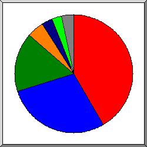
Поделено на сектора по количеству обращений к странице.
Netscape (compatible)
Safari
Sogou web spider
Firefox
MSIE
Go-http-client
другое
Показано первые 20 браузеров - по количеству обращений к странице, отсортировано по количеству обращений к странице.
| N | запросы | страниц | браузер |
|---|---|---|---|
| 1 | 1208 | 887 | Netscape (compatible) |
| 2 | 5687 | 819 | Safari |
| 5420 | 738 | Safari/537 | |
| 218 | 59 | Safari/9537 | |
| 9 | 9 | Safari/535 | |
| 32 | 5 | Safari/604 | |
| 2 | 2 | Safari/605 | |
| 2 | 2 | Safari/533 | |
| 2 | 2 | Safari/534 | |
| 1 | 1 | Safari/602 | |
| 1 | 1 | Safari/532 | |
| 3 | 571 | 510 | Sogou web spider |
| 571 | 510 | Sogou web spider/4 | |
| 4 | 177 | 125 | Firefox |
| 47 | 45 | Firefox/47 | |
| 10 | 10 | Firefox/38 | |
| 8 | 8 | Firefox/59 | |
| 15 | 8 | Firefox/3 | |
| 7 | 7 | Firefox/50 | |
| 6 | 6 | Firefox/64 | |
| 5 | 5 | Firefox/25 | |
| 4 | 4 | Firefox/65 | |
| 3 | 3 | Firefox/53 | |
| 3 | 3 | Firefox/56 | |
| 5 | 504 | 88 | MSIE |
| 381 | 65 | MSIE/7 | |
| 17 | 7 | MSIE/8 | |
| 66 | 6 | MSIE/6 | |
| 15 | 5 | MSIE/9 | |
| 23 | 3 | MSIE/10 | |
| 6 | 68 | 68 | Go-http-client |
| 68 | 68 | Go-http-client/1 | |
| 7 | 48 | 16 | Mozilla |
| 3 | 3 | Mozilla/1 | |
| 8 | 14 | 14 | python-requests |
| 14 | 14 | python-requests/2 | |
| 9 | 14 | 14 | Opera |
| 14 | 14 | Opera/9 | |
| 10 | 14 | 9 | panscient.com |
| 11 | 8 | 8 | Scrapy |
| 8 | 8 | Scrapy/1 | |
| 12 | 15 | 8 | CheckMarkNetwork |
| 15 | 8 | CheckMarkNetwork/1 | |
| 13 | 6 | 6 | CATExplorador |
| 6 | 6 | CATExplorador/1 | |
| 14 | 5 | 5 | PHPCrawl |
| 15 | 4 | 4 | Python |
| 4 | 4 | Python/3 | |
| 16 | 3 | 3 | Python-urllib |
| 2 | 2 | Python-urllib/2 | |
| 1 | 1 | Python-urllib/3 | |
| 17 | 2 | 2 | di-cloud-parser |
| 18 | 2 | 2 | SafeDNSBot (https: |
| 2 | 2 | SafeDNSBot (https://www | |
| 19 | 1 | 1 | GuzzleHttp |
| 1 | 1 | GuzzleHttp/6 | |
| 20 | 1 | 1 | PHP-Curl-Class |
| 1 | 1 | PHP-Curl-Class/8 | |
| 9 | 2 | [не распознано: 4 браузеров] |
(Переход: Вверх | Основная Информация | Статистика по месяцам | Статистика по дням недели | Статистика по времени суток | Статистика по доменам | Статистика по организациям | Статистика по перенаправляющим ссылкам | Статистика отказов по ссылкам | Статистика по ссылающимся сайтам | Статистика по браузерам (подробная) | Статистика по браузерам (суммарная) | Статистика по операционным системам | Статистика по коду возврата | Статистика по размерам файлов | Статистика по типам файлов | Статистика по директориям | Статистика по запросам)
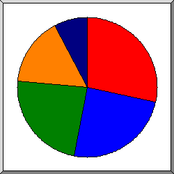
Поделено на сектора по количеству обращений к странице.
Неизвестная ОС
роботы
Windows
Unix
Macintosh
Список операционных систем, отсортировано по количеству обращений к странице.
| N | запросы | страниц | ОС |
|---|---|---|---|
| 1 | 1045 | 844 | Неизвестная ОС |
| 2 | 1012 | 773 | роботы |
| 3 | 3486 | 479 | Windows |
| 571 | 223 | Неизвестная Windows-система | |
| 1889 | 130 | Windows NT | |
| 963 | 124 | Windows XP | |
| 3 | 2 | Windows Server 2003 | |
| 60 | 0 | Windows 2000 | |
| 4 | 2380 | 262 | Unix |
| 2380 | 262 | Linux | |
| 5 | 438 | 234 | Macintosh |
(Переход: Вверх | Основная Информация | Статистика по месяцам | Статистика по дням недели | Статистика по времени суток | Статистика по доменам | Статистика по организациям | Статистика по перенаправляющим ссылкам | Статистика отказов по ссылкам | Статистика по ссылающимся сайтам | Статистика по браузерам (подробная) | Статистика по браузерам (суммарная) | Статистика по операционным системам | Статистика по коду возврата | Статистика по размерам файлов | Статистика по типам файлов | Статистика по директориям | Статистика по запросам)
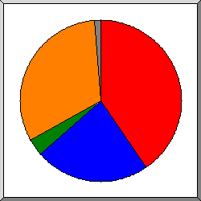
Поделено на сектора по количеству обращений.
200 OK
302 Document found elsewhere
304 Not modified since last retrieval
404 Document not found
другое
Список кодов возврата, отсортированный по порядковым номерам.
| запросы | код статус |
|---|---|
| 7391 | 200 OK |
| 290 | 302 Document found elsewhere |
| 995 | 304 Not modified since last retrieval |
| 8788 | 404 Document not found |
| 39 | 500 Internal server error |
(Переход: Вверх | Основная Информация | Статистика по месяцам | Статистика по дням недели | Статистика по времени суток | Статистика по доменам | Статистика по организациям | Статистика по перенаправляющим ссылкам | Статистика отказов по ссылкам | Статистика по ссылающимся сайтам | Статистика по браузерам (подробная) | Статистика по браузерам (суммарная) | Статистика по операционным системам | Статистика по коду возврата | Статистика по размерам файлов | Статистика по типам файлов | Статистика по директориям | Статистика по запросам)
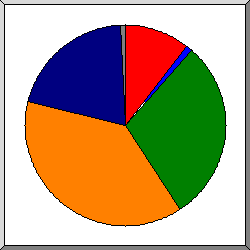
Поделено на сектора по количеству обращений.
0
1B- 10B
101B- 1kB
1kB- 10kB
10kB-100kB
другое
| размер | запросы | %байт |
|---|---|---|
| 0 | 1307 | |
| 1B- 10B | 93 | |
| 11B- 100B | 9 | |
| 101B- 1kB | 2399 | 1,15% |
| 1kB- 10kB | 2793 | 7,31% |
| 10kB-100kB | 1726 | 81,68% |
| 100kB- 1MB | 59 | 9,86% |
(Переход: Вверх | Основная Информация | Статистика по месяцам | Статистика по дням недели | Статистика по времени суток | Статистика по доменам | Статистика по организациям | Статистика по перенаправляющим ссылкам | Статистика отказов по ссылкам | Статистика по ссылающимся сайтам | Статистика по браузерам (подробная) | Статистика по браузерам (суммарная) | Статистика по операционным системам | Статистика по коду возврата | Статистика по размерам файлов | Статистика по типам файлов | Статистика по директориям | Статистика по запросам)
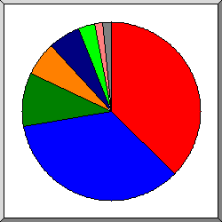
Поделено на сектора по суммарному трафику.
.jpg [JPEG graphics]
.js [JavaScript code]
[директории]
.woff2
.css [Cascading Style Sheets]
.php [PHP]
другое
Список расширений на которые приходиться, как минимум 0,1% трафика, отсортировано по суммарному трафику.
| запросы | %байт | расширение |
|---|---|---|
| 1063 | 43,29% | .jpg [JPEG graphics] |
| 858 | 28,96% | .js [JavaScript code] |
| 2617 | 11,92% | [директории] |
| 192 | 5,65% | .woff2 |
| 1532 | 5,28% | .css [Cascading Style Sheets] |
| 1556 | 2,81% | .php [PHP] |
| 168 | 0,89% | .cgi [CGI scripts] |
| 279 | 0,58% | .png [PNG graphics] |
| 48 | 0,32% | .jpeg [JPEG graphics] |
| 12 | 0,24% | .ttf |
| 61 | 0,06% | [не распознано: 2 расширений] |
(Переход: Вверх | Основная Информация | Статистика по месяцам | Статистика по дням недели | Статистика по времени суток | Статистика по доменам | Статистика по организациям | Статистика по перенаправляющим ссылкам | Статистика отказов по ссылкам | Статистика по ссылающимся сайтам | Статистика по браузерам (подробная) | Статистика по браузерам (суммарная) | Статистика по операционным системам | Статистика по коду возврата | Статистика по размерам файлов | Статистика по типам файлов | Статистика по директориям | Статистика по запросам)
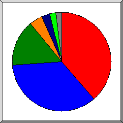
Поделено на сектора по суммарному трафику.
/images/
/lib/
[корневой каталог]
/other_css/
/scripts/
/fonts/
другое
Список директорий на которые приходиться, как минимум 0,01% трафика, отсортировано по суммарному трафику.
| запросы | %байт | директория |
|---|---|---|
| 1344 | 38,14% | /images/ |
| 789 | 34,40% | /lib/ |
| 3101 | 20,13% | [корневой каталог] |
| 822 | 2,64% | /other_css/ |
| 1325 | 1,68% | /scripts/ |
| 107 | 1,28% | /fonts/ |
| 168 | 0,89% | /cgi-sys/ |
| 391 | 0,61% | /js/ |
| 63 | 0,09% | /registration/ |
| 172 | 0,09% | /green64/ |
| 103 | 0,03% | /uploads/ |
| 1 | [не распознано: 1 директория] |
(Переход: Вверх | Основная Информация | Статистика по месяцам | Статистика по дням недели | Статистика по времени суток | Статистика по доменам | Статистика по организациям | Статистика по перенаправляющим ссылкам | Статистика отказов по ссылкам | Статистика по ссылающимся сайтам | Статистика по браузерам (подробная) | Статистика по браузерам (суммарная) | Статистика по операционным системам | Статистика по коду возврата | Статистика по размерам файлов | Статистика по типам файлов | Статистика по директориям | Статистика по запросам)
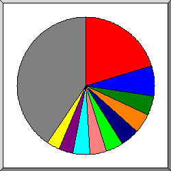
Поделено на сектора по количеству обращений.
/
/scripts/goods.php
/cssgb.css
/js/cart-script.js
/lib/jquery-3.3.1.js
/images/fantasy.jpg
/other_css/goodsNew.css
/images/oil.jpg
/scripts/dbhandler.php
/images/logo1.jpg
другое
Список файлов на которые приходиться, как минимум 20 запросов, отсортировано по количеству обращений.
| запросы | %байт | последнее время | файл |
|---|---|---|---|
| 2341 | 11,79% | 31 мая 19 13:35 | / |
| 28 | 0,09% | 21 мая 19 12:27 | /?C=M;O=A |
| 28 | 0,09% | 27 апр 19 05:35 | /?C=S;O=A |
| 20 | 0,23% | 21 апр 19 01:30 | /?C=D;O=A |
| 19 | 0,06% | 4 апр 19 05:45 | /?C=N;O=D |
| 16 | 0,06% | 15 апр 19 22:00 | /?C=N;O=A |
| 16 | 15 фев 19 14:48 | /?54.36.148.168 | |
| 14 | 0,06% | 4 апр 19 05:45 | /?C=D;O=D |
| 13 | 0,12% | 22 мая 19 15:12 | /?66.249.64.73 |
| 12 | 0,06% | 19 апр 19 06:13 | /?C=M;O=D |
| 12 | 0,06% | 4 апр 19 05:46 | /?C=S;O=D |
| 529 | 1,10% | 28 мая 19 18:09 | /scripts/goods.php |
| 393 | 0,99% | 8 мая 19 23:56 | /cssgb.css |
| 391 | 0,61% | 31 мая 19 11:42 | /js/cart-script.js |
| 349 | 26,58% | 31 мая 19 11:42 | /lib/jquery-3.3.1.js |
| 305 | 17,39% | 8 мая 19 23:56 | /images/fantasy.jpg |
| 294 | 0,32% | 31 мая 19 11:41 | /other_css/goodsNew.css |
| 285 | 3,10% | 28 мая 19 12:22 | /images/oil.jpg |
| 249 | 18 мая 19 22:11 | /scripts/dbhandler.php | |
| 245 | 13,66% | 8 мая 19 18:24 | /images/logo1.jpg |
| 241 | 0,13% | 20 апр 19 22:43 | /other_css/goods.css |
| 168 | 0,89% | 29 апр 19 20:01 | /cgi-sys/suspendedpage.cgi |
| 164 | 1,03% | 31 мая 19 10:33 | /index.php |
| 131 | 1,92% | 31 мая 19 11:41 | /other_css/bootstrap-grid.min.css |
| 122 | 0,16% | 31 мая 19 11:41 | /lib/simplebar.css |
| 122 | 3,05% | 28 мая 19 12:22 | /images/flour.jpg |
| 122 | 0,27% | 31 мая 19 11:41 | /other_css/normalize.css |
| 119 | 0,14% | 29 мая 19 22:02 | /scripts/foods.php |
| 119 | 0,06% | 28 мая 19 12:22 | /images/favicon-32x32.png |
| 118 | 1,76% | 31 мая 19 11:42 | /lib/simplebar.min.js |
| 106 | 6,09% | 21 мая 19 07:39 | /logo1.jpg |
| 102 | 1,26% | 20 апр 19 22:43 | /lib/fontawesome/css/all.css |
| 98 | 4,63% | 20 апр 19 22:43 | /lib/fontawesome/webfonts/fa-solid-900.woff2 |
| 94 | 1,02% | 30 мая 19 19:26 | /fonts/OleoScript/Oleoscript.woff2 |
| 93 | 0,23% | 7 янв 19 22:25 | /phpMM.css |
| 85 | 0,10% | 29 мая 19 21:43 | /scripts/clothes.php |
| 74 | 0,06% | 29 мая 19 21:55 | /scripts/other.php |
| 71 | 0,05% | 18 мар 19 09:30 | /green64/ |
| 64 | 0,07% | 29 мая 19 10:07 | /scripts/books.php |
| 61 | 0,10% | 31 мая 19 04:20 | /scripts/contact.php |
| 60 | 0,05% | 28 мая 19 12:22 | /images/shopping-basket.svg |
| 57 | 0,02% | 12 апр 19 15:11 | /uploads/ |
| 55 | 0,02% | 18 мар 19 09:24 | /green64/uploads/ |
| 48 | 0,32% | 7 апр 19 23:40 | /images/flour1.jpeg |
| 46 | 0,02% | 18 мар 19 09:24 | /green64/uploads/profile_pics/ |
| 46 | 0,01% | 1 мар 19 23:43 | /uploads/profile_pick/ |
| 42 | 0,01% | 28 мая 19 19:14 | /scripts/description.php |
| 36 | 0,03% | 30 мая 19 14:11 | /scripts/recipe.php |
| 34 | 0,12% | 7 янв 19 22:25 | /images/tmm_php-mysql_footer.png |
| 34 | 0,08% | 7 янв 19 22:25 | /images/tmm_php-mysql_example-arrow.png |
| 34 | 0,08% | 7 янв 19 22:25 | /images/tmm_php-mysql_background.png |
| 34 | 27 мая 19 19:07 | /other_css/registration_css.css | |
| 34 | 0,06% | 30 мая 19 17:03 | /scripts/allthings.php |
| 28 | 0,21% | 7 янв 19 22:25 | /images/tmm_php-mysql_banner.png |
| 27 | 0,04% | 14 мая 19 17:19 | /registration/unsuccesfull.php |
| 26 | 0,02% | 17 мая 19 14:02 | /scripts/callback_second.php |
| 23 | 0,02% | 28 мая 19 00:06 | /images/apple-touch-icon.png |
| 21 | 0,05% | 29 мая 19 09:00 | /registration/registration.php |
| 46 | 0,27% | 31 мая 19 11:42 | [не распознано: 8 файлов] |